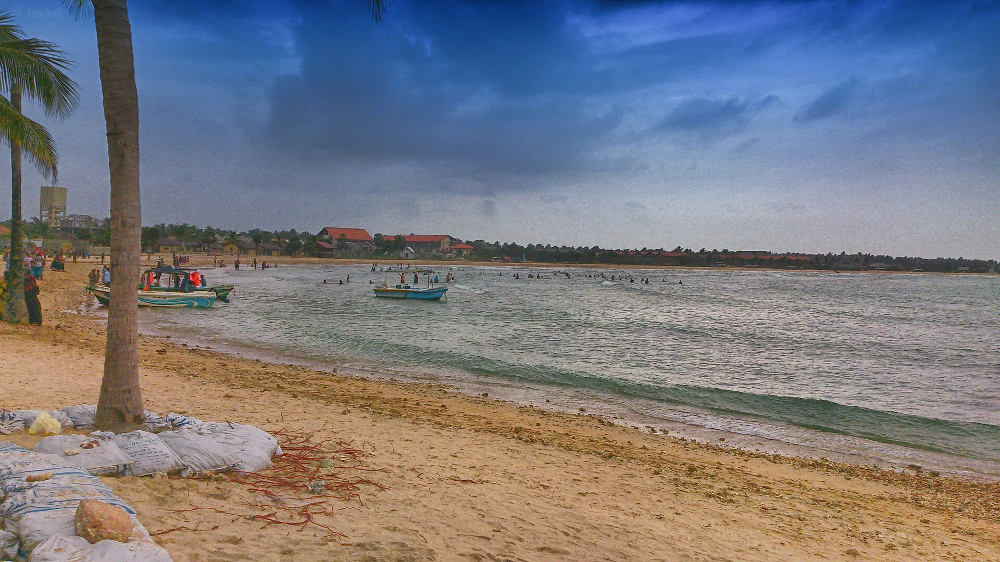

The bay
Pasikudah Bay
The destination itself: a long, shallow bay where the reef keeps the water calm. Best enjoyed early morning or late afternoon.
On the doorstep
Beach

The beach is the centre of a Pasikudah stay, but the surrounding coast rewards a day or two of exploring.
A short list of the places most often visited from Pasikudah. Opening times, access and boat arrangements should be confirmed locally.
The destination itself: a long, shallow bay where the reef keeps the water calm. Best enjoyed early morning or late afternoon.
Immediately south of Pasikudah, a sweeping and often quieter stretch of beach with its own small settlements and guest houses.

Lagoon country south of Pasikudah, known for birdlife, fishing communities and boat trips. Arrange trips locally and agree prices in advance.
The district capital offers a change of pace: a historic fort, busy markets, places of worship and the lagoon that defines the town.


Pasikudah’s bay is unusually gentle, but the sea is still the sea. A few simple habits make a stay more comfortable.
Lifeguard cover, flags and swimming zones vary by property and season. Follow local guidance at all times.
Most activities are arranged through hotels or local operators. Availability depends on the season, weather and sea conditions.
The simplest pleasures: calm water in the morning and a long beach in the evening.
Paddling and gentle water-based activities suited to the sheltered bay.
Reef and wreck diving with local operators, best in the clearer season.
Temple festivals, markets and the everyday life of the district.
Lagoon birdwatching, palm country and slow drives inland.
Seafood, rice and curry and beachfront meals at member establishments.
Member hotels and guest houses along the bay, with details published as they are verified.